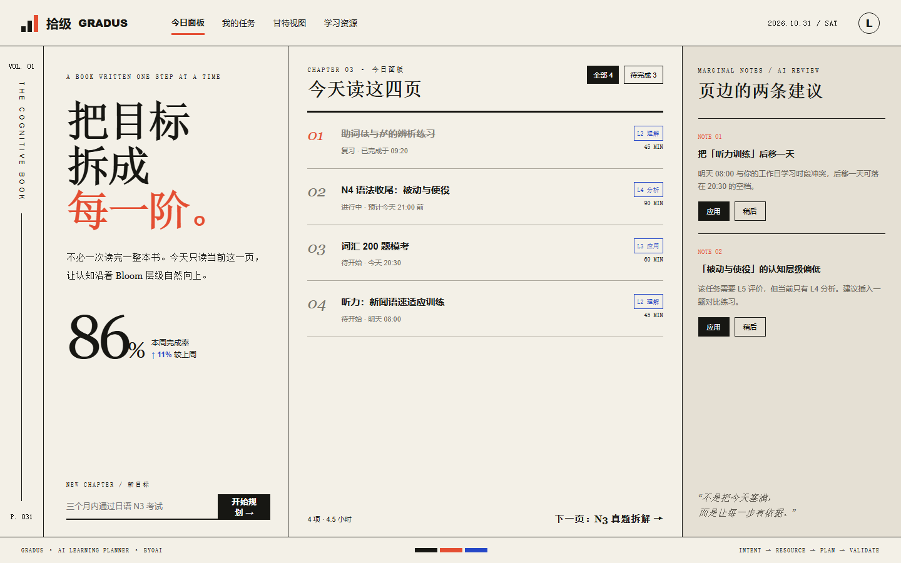
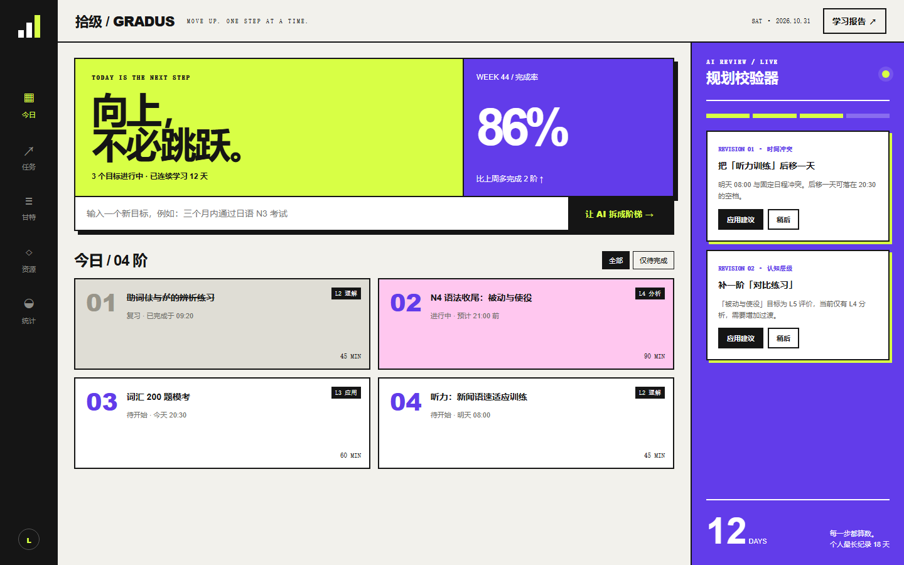
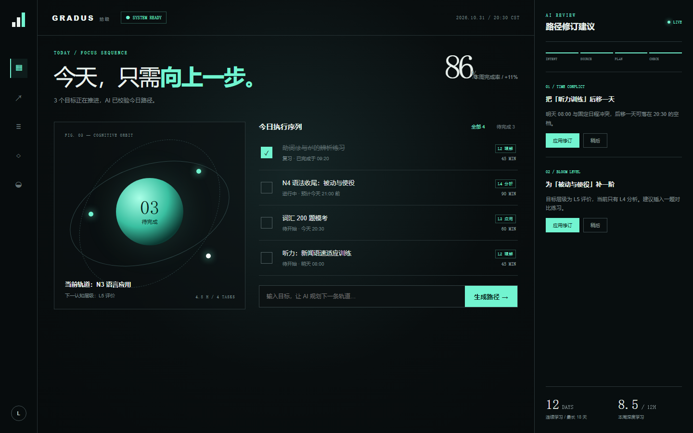
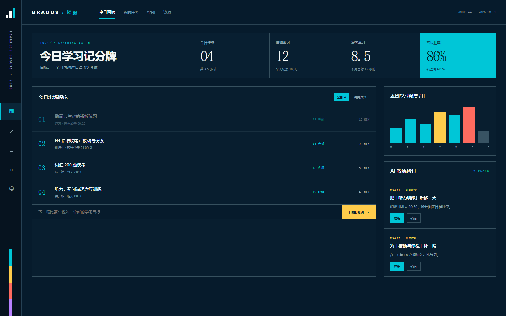
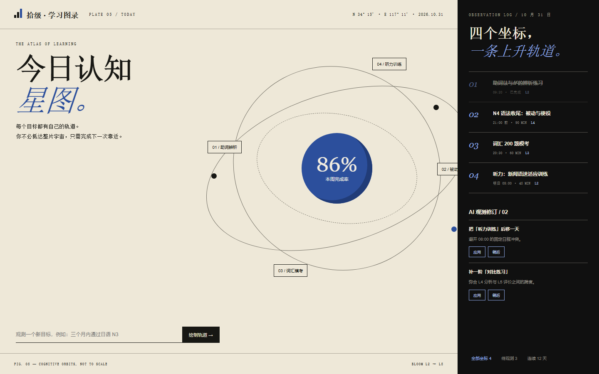
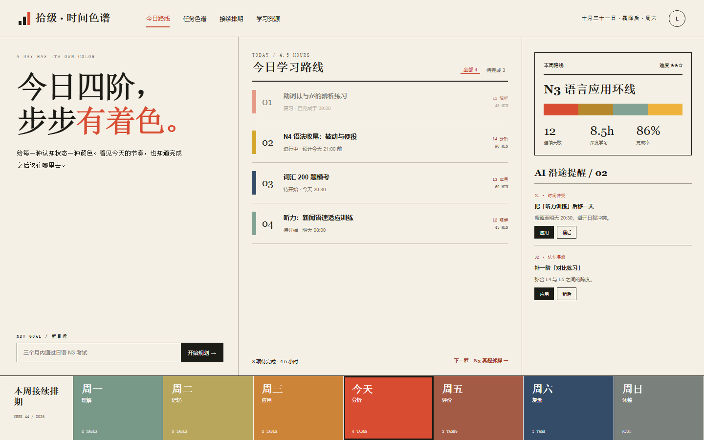

01 认知书页
备选以非对称书页、页码与页边批注表达「每次只读当前一页」。适合强化学习内容的沉静感与长期积累。
六版共用同一组日语 N3 学习任务、Bloom 认知层级、今日统计与 AI 修订建议。配色与布局都从产品定位重新推导：降低学习决策摩擦，让认知逐级进阶，让全局排期自然接续。

以非对称书页、页码与页边批注表达「每次只读当前一页」。适合强化学习内容的沉静感与长期积累。

高能量字体、硬朗模块与错位色块把「向上一步」变成视觉动作。任务、目标输入和 AI 校验形成清晰执行闭环。

暗场、轨道与青绿色状态灯聚焦「现在做什么」。AI 以路径校验器存在，不抢夺任务本身的注意力。

借鉴赛事数据记分与彩色边轨，把任务转化为出场顺序。数据表达强，适合偏重量化反馈的产品阶段。

以观测图录和运行轨道表达目标之间的关系。概念辨识度最高，适合作为品牌视觉或学习全景的延展方向。

把认知状态映射为传统色，把时间条直接放进首屏。既保留书卷气，也让「全局接续排期」成为产品的独特界面语言。